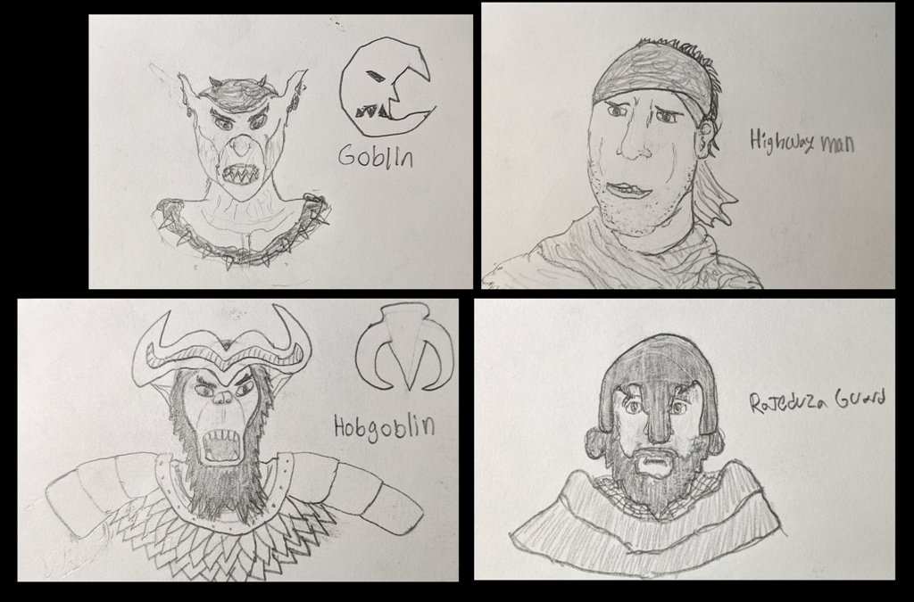
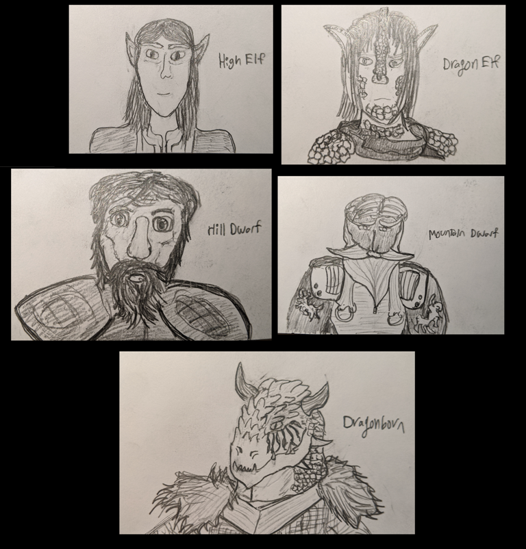
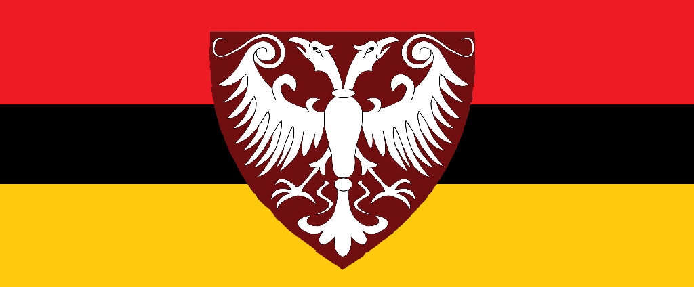
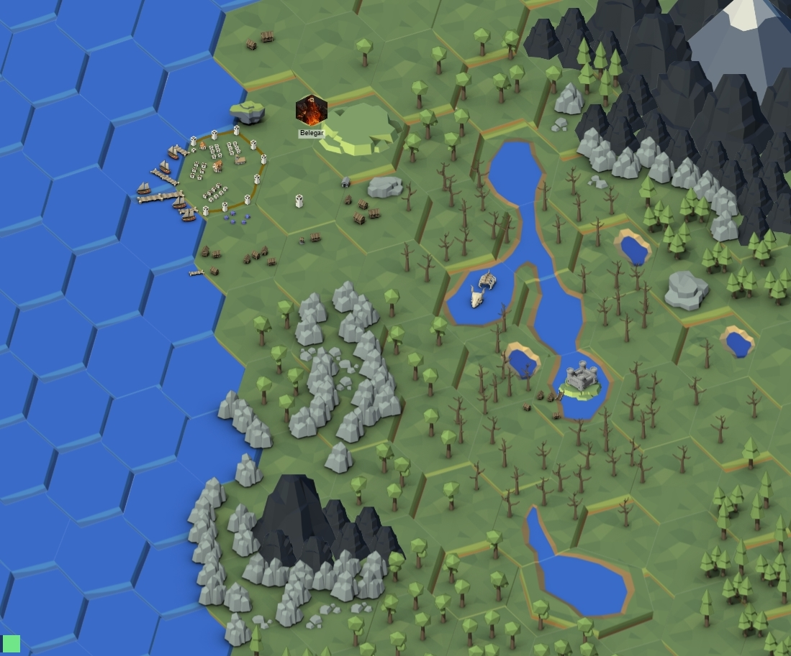
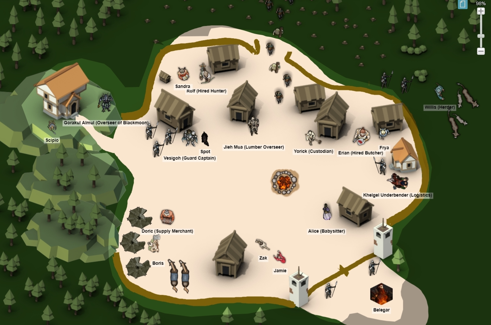
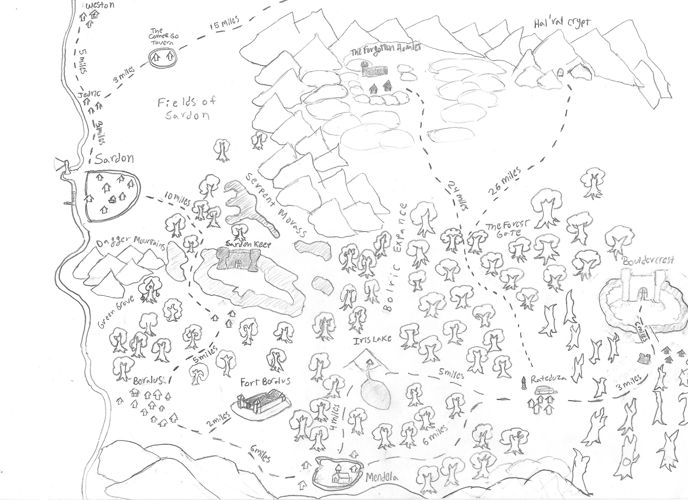
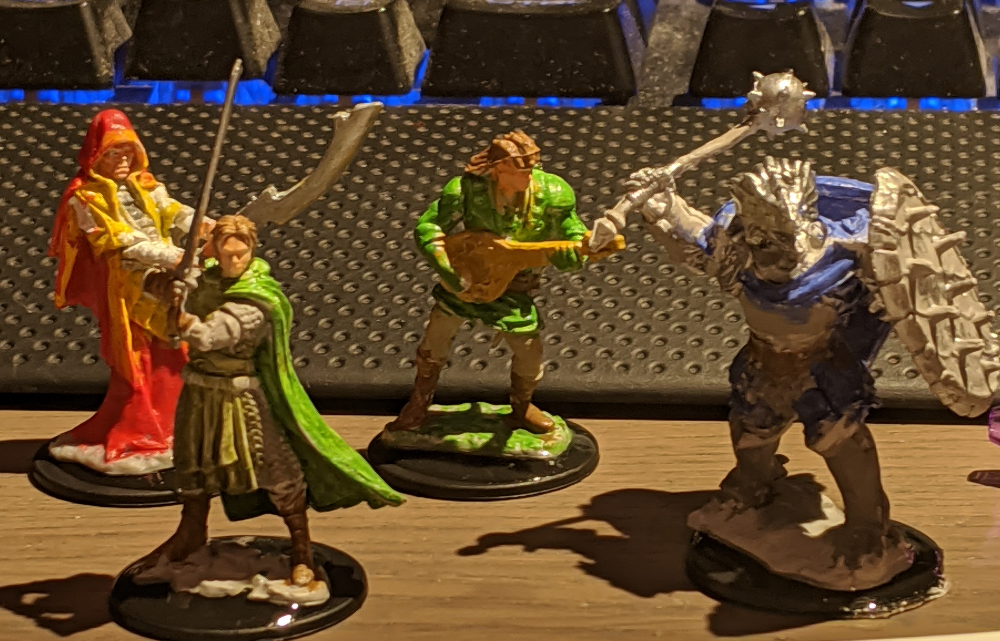
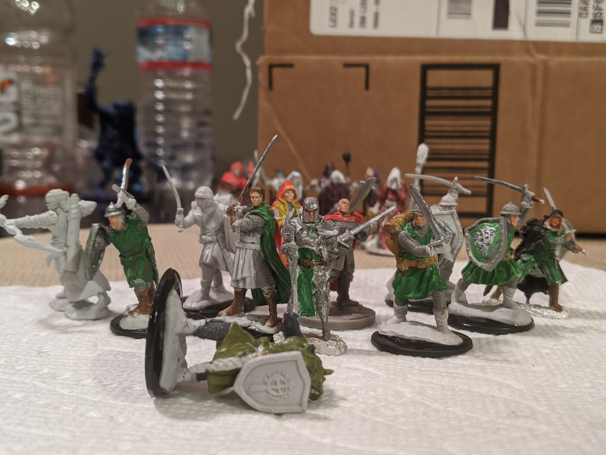
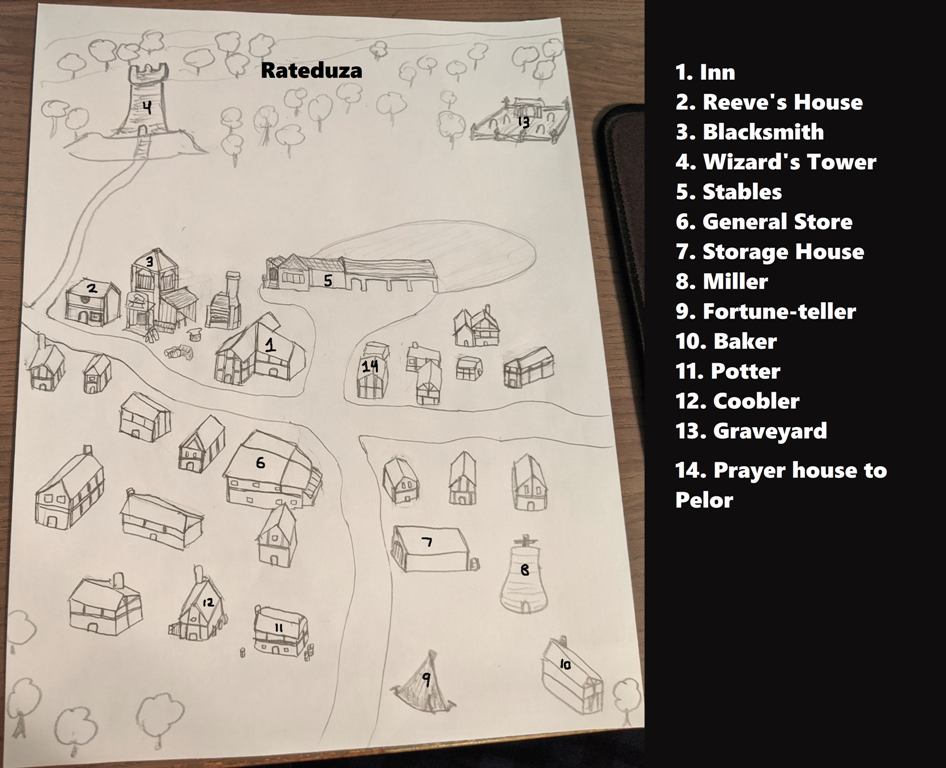
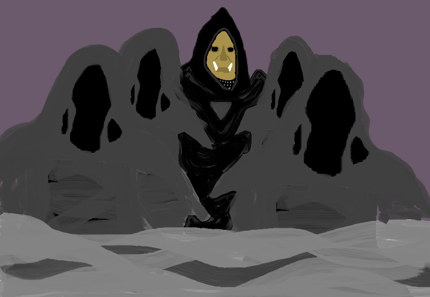

Ryan Bartoli
Index | Projects | Activities | ResumeHobbies
Web Design
Hobby pages
Music Interests: I've been told I have an eclectic taste in music.
Drawing: The ultimate pasttime.
Studying history: Favorite subject of study.
Crafting Roleplay settings: A mixing pot of design and development of a fantasy game world.
Gaming: Interactive entertainment that helped me develop as a designer.
Hobby pages
Music Interests: I've been told I have an eclectic taste in music.
Drawing: The ultimate pasttime.
Studying history: Favorite subject of study.
Crafting Roleplay settings: A mixing pot of design and development of a fantasy game world.
Gaming: Interactive entertainment that helped me develop as a designer.
Penra.. so far
My world encompasses a mixing pot of fantasy races thrown together by a mythos of ancient conflicts and colamities started by started by races that still exist in a declining state.
Ancient Penra
The ancient status quo pertained between Dragon and Giant-kind, the prime races of Penra, who ruled over the 'lesser races' and ran their own mighty empires.
A major event in Penra's history was the total collapse of the realm Evergreen, home of the Fey, split by its ruling Elven Empire Magical Civil War that resulted in magical tares between the Marial Realm and the Evergreen.
Being the world where the naturalistic energies of universe come from, these tares had rapturous consequences on the Material Realm, taring some continents asunder, enhancing the ferociousness of its inhabitance's biology, and corrupting the natural cycle of nature.
For this misdeed, the Fey banished Elven-kind from the Evergreen, made worst off when brought under the dominion of the Dragonic Empire.
In the years without wars to rage, the Dragons experimented with their slaves and produced half breeds to serve in their armies.
But no period of time is ever truely peaceful. Amiss this tranqual time, man and dwarf warred as proxies for Giant-kind against the Elves and Dragonborn of the Dragons.
How the great conflict eventually arose remains a mystery, though the powerkeg to such a war was inevitable to spark.
Eventually these mighty empires were brought low in their war, and were brought to near exinction when their unified slaves rose up, fortified by astral powers of foreign gods.
Devistated, the giants lost their kingdom and the many dragon flights were forced into hiding.
Since then, the state of Penra's fate has been left in the hands of morals.
Early concept art of the local sites in the starting town of Rateduza.
Visual aid for my friends new to D&D.
Region of Teshiora
A flatland region domainated by city state duchies primarily controlled by the seven ruling Human Clans.
The duchy of Rekyva is nestled in the hilliest part of Teshiora's northlands along the Latvia River with the capital of Rekyva built as a hilltop fortress. In the ancient Rekyvan language, known as Ruskle, Rekyva means (Rek) Warrior's (yva) Cradle, which is resembled in their militaristic mindset, fielding the largest army of the seven duchies. Ruskians value valor and stoicism in the face of danger, exemplifying a culture perceived to be constantly at war with its neighbors, forging some of the most tenacious and stubborn men of Teshiora. Prone to expansionist tendencies, the twin ruling Warlords project the persistent image to their people that they are foreigners to these lands surrounded by enemies and must always be ready for war. Often times the Ruskians go to war to ironically stave off hostilities from powerful neighbors, using occupied duchies like Lithia as a buffer state from southern aggression.
The duchy of Lithia is centrally located in-between two major trade rivers and a plentitude of flat land for agriculture to flourish where the capital of Lithia being a twin port city. Formed by Elven decent, Lithia means (Lith) Rain (ia) Land, showcased in intense bimonthly rain seasons resulting in numerous rainstorms and floods, controlled only by the peoples deep druidic and religious ties to nature. Bonded in the Triple Pact, these Elves inhabit Human lands under the guidance of a council of Human elders of Clan Zoric, for no other duchy would accept them.
Co-habitation among races led Lithia containing the highest population of Half Elves in Teshiora, while also fostering the first and largest mixing pot of Humans and Elves in the known world. Recently in world history, the Ruskian Warlord Grim Holska led an army of over 14,000 to occupy the unmilitarized Lithia after a Half Elf assassin made an attempt on his life. Without the power to defend their homes, many Lithians have fled south into the ancient forests of Capidea where they setup hidden camps under the hospitality of Capidean Forest Elves. Clan Holska now occupies Lithia, repressing any resemblance of the old Elven religion and restricting freedom of movement throughout the duchy. The people of Lithia are now refugees; harboring ill will towards neighboring kingdoms who stood by as their home was taken over, pushing some of the Circle's druids to follow radical leadership to reclaim their homeland.
The grassland city state of Pieterues is the hegemony of the Teshioran League, under the rule of King Daravan, proclaimed King of the Humans. Founded along the Great Arrow Lake, the foundation myth of Pieterues was formed around the Age of Cataclysm, during which a band of villages from western tribes came across and hide in an unremarkable abandoned town of no name. Following a bid of despiration, the villagers followed the superstition of crazied village elder who commanded them to coat the hideaways and their families in red to avoid sight of the invading demonic hordes. Those who faifully followed the old man's commands evaded the notice of an invading demonic hoard, who went on to slaughter the uncoated villagers and level the countryside. For 8 days the villagers remained hidden in the village until a messsager was spotted outside, telling the survivors that demons had been driven off by brave defenders of the land.
In light of the villager's blessed survival, they named the village Pieterues (Little Red Stone) and declared the mad elder as their prophet. With many of their neighboring tribes devastated by the Cataclysm, the Piertians were given chance to expand for centuries into a dominate force of the region, able to finally compete with its rivaling neighbors. The village became a town and placed their wisest elders as ruling lords, guided by clergy of a newly forming religion called Pekyo (Eternal Stone) which worshiped aspects of strong family bonds, the strength to protect them, and the honoring of heroic sacrifice. As generations grew up with their founding myth taught, their survival was interpreted as a sign of fate, prompting religion became an important part of Piertians lives, leading to many advisors to the King being among the clergy. The King themselves was chosen by hereditary ties to the city's founders, maintaining power primarily those appeasement of the Arch Clerics and the formation of world renown army, known for their fanatical loyalty and dedication. Those Kings that failed to appease the Order of Pekyo tended to be placed in positions were their family was excommunicated from the church and had to commit to typically suicidal act of heroism to restore their honor.
Throughout the history of Teshiora, Kings of Pieterues inducted neighboring city states into the Teshioran League through military force, but mainly remaining loyal as long as Pieterues defends the realm from outside forces. Such outside forces include the barbarian tribes to the north, the Centaur leagues to the east, and feared prophetic return of the demons hordes.
Region of Sardon
The major powers here are the wealthy noblemen Julius of Clan Capinaro of Sardon and Antonius of Clan Walden of Bouldercrest. Julius' father, Flotinius Capinaro had inherited the prosperous town from his father but sought greater power and dominion over the land. Against the advice of his chief architects and men at arm's he built a castle within the swamp known as the Serpent Morass. The construction crew became attacked by lizard men from the marsh. For months this went on till Flotinus was forced to abandon the project mid construction, leaving the castle to the elements. This curtailed human expansion southward for many decades.
Five years prior to our game, brave nobles funded expeditions to sail past the swamp and settle land southward. The first colony became known as Boralius, and the rest of the story continues from there.
The Capinaro family rules over Sardon and benifit from a lifestyle of mercantile lords as the city is a coastal trade hub of the region. The Walden family run an expedition colony consisting of Boralus and it's Fort, Mendel's, Rateduza, and Bouldercrest Keep.
Blackmoon Lumberyard
An adventure located in the southern woods of Sardon where heroes are called upon to put down a werewolf threatening the camp.
Region of Bouldercrest
For my local friends we are playing in the Bouldercrest region, a group of frontier settlements east of Sardon under the authority of the Walden family.
Adventurers are called to the location to deal with local problems ranging from road bandits, cults to dark gods, and even a marching hobgoblin legion.
Here are our heroes (from the center to the right) Kreyg, the Half-Elf Lore Bard, and Kriv, the Dragonborn Paladin.
They are accompanied by Hans, the Cleric of Pelor, and Arthur Ward, the Captain of the Rateduza town guard.
Amist starting a in-person game, I decided to take up miniature collecting and painting for fun.
Here is my little militia for the town of Rateduza.
Here is a map of Rateduza, taking inspiration from old Dungeons and Dragons hamlets.
An artsy rendition in MS paint of Gorgosh, the Dark Herold of Therizdun and leader of this cult.
